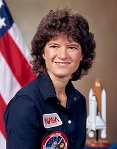

.jpg)
Christian Herinckx
Senior Inquiry 2019 Portfolio
I am a senior at Westview High School and have lived in Portland, Oregon my whole life. I compete in Track & Field where I do high jump and also run cross country.
Sally Ride represents diversity because she is an accomplished astronaut in a time that there were very few women astronauts. She was also LGBTQ, which was practically unheard of for a historical figure. She was the first American woman in space and is a pioneer for women's space aviation. She exemplifies diversity in her field in a time where very few women held high scientific roles in society.
PART A (Austin DuFrene)
PART B (Christian Herinckx)
PART C (Michael Burke)
A. Sally Ride was the first American woman in space and the third woman in space. She was an astronaut, physicist, and engineer who graduated from Stanford University and worked for NASA. Ride spent over 343 hours in space and she was also LGBTQ. She was admitted to the California Hall of Fame and was granted the greatest honor given by the Space Foundation, a space lifetime achievement award. Sally Ride is a noteworthy example of diversity in science, however, her discoveries aren’t taught, mostly due to the highly complex nature of astrophysics. Not only was she a pioneer for women’s space aviation, but she also set an example for women in science. Before her first spaceflight, she was bombarded by questions regarding her sexuality and how that would affect her. Not all of these questions were particularly insightful, some were downright mocking. However, her advances in science, such as assistance in uncovering data on the Challenger and Columbia disasters were vital. She also created the Sally Ride Science company, that focused on getting elementary and middle aged girls invested in science, something that was applicable to general education. Sally Ride’s life demonstrates that diversity is present in science, but that we need more of it. Her accomplishments at NASA and teaching in a classroom at Stanford both furthered the education of many and widened the research of physics and engineering. She was able to assist with astrophysics in new ways and discover problems that some men would never think of, such as where she provided information on the Challenger disaster and O-rings. She changed the idea of what a scientist was and is, at least to me, as astronauts, for the most part, were largely test pilots.
B. To conduct this research on Sally Ride, we used Wikipedia. While not the most trustworthy or direct of sources, it allowed us to accurately answer the questions. Wikipedia uses a multitude of articles to sum up the information about her life, the majority of which were articles of space that included her as the first American woman in space. These sources (the ones Wikipedia derives from) are quality because they are either written by Sally Ride herself or they are official and trustworthy sources such as NASA. There was not much difficulty in researching Sally Ride because she is such an important figure in history and to the women's rights movement with the fact that she was the first American woman in space. One academic source that talks about Sally Ride and her biographical data are NASA.gov. A popular press article about Sally Ride is the Huffington Post article titled “Sally Ride, First American Woman In Space, Revealed To Have Female Partner Of 27 Years.” This article provides a lot of information about how Sally Ride is part of the LGBTQ community and also mentions how she struggled and died due to pancreatic cancer.
C. The diversity of human experience is a clear goal addressed in the research of Sally Ride. Since Sally Ride is such a pioneer woman in space travel, she provides diversity to the field through her contributions. Sally Ride even further paved the way for future diversity in science, by being a model and giving structure for women in the future to get into space travel. Her experience addresses the diversity of human experience goal because of the diverse female and LGBTQ perspective she brought forward. Sally Ride's life also addresses the goal of ethics and social responsibility. Through both her eventful space travel career and the Sally Ride Science company she founded, she opened up the door for future women to enter the industry. This addresses ethics and social responsibility through her impact toward the future of the industry, where more diverse perspectives and people could be more accepted.
“Sally Ride.”Wikipedia, Wikimedia Foundation, 8 Sept. 2018, en.wikipedia.org/wiki/Sally_Ride.
NASA. “Astronaut Bio: Sally K. Ride.”NASA, NASA, www.jsc.nasa.gov/Bios/htmlbios/ride-sk.html.
Organization. “Astronaut Sally Ride's Obituary Reveals She Leaves Behind Female Partner Of 27 Years.”The Huffington Post, TheHuffingtonPost.com, 2 Feb. 2016, www.huffingtonpost.com/2012/07/23/sally-ride-first-american-woman-female-partner-_n_1696537.html.
Dear former STEM teachers,
We have written this letter to discuss the use of diversity in STEM in school curriculum. Overall, the presence of women scientists needs to be more prevalent in discussions in classrooms for many reasons. Women as a population are very underrepresented in the science community despite the brilliant discoveries and work ethic they have brought to the field. Rosalind Franklin is a perfect example of how women are underrepresented and not accurately portrayed in discoveries. Using crystallography and X-ray diffraction, she was able to discover the composition of DNA as well as fully develop and support theories on DNA. After dying tragically young, her evidence was taken by a male colleague and given to a competing scientist who then claimed her findings as his own and he is to this day associated with that discovery. Rosalind Franklin absolutely needs to be discussed in science classrooms not only as a successful researcher, but also as the subject of male privilege and sexism that is still prevalent in STEAM today. Overall, there needs to be more women scientists discussed in science classrooms to develop the idea of diversity in young minds.
The discussion of diversity in STEM is vital to the development of students. The demographics within the science field do not match those of the general population. This means that a lot of minorities don’t see themselves fairly represented. Without diversity in the STEM field we limit ourselves to the ideas and intelligence of only certain groups of people, this results not only in social issues but in safety issues for minorities. By talking about a more diverse range of scientists in classroom, we can change the way people think about scientists. Showing young girls and people of color that there are scientists like them will inspire a more diverse population to go into STEM. Often times, young boys who express an interest in science are encouraged and people don’t think anything of it. On the other hand, when a girl says she wants to go into a STEM field she gets warned about the difficulty of succeeding; people are then surprised if she is good at science. This ties into the reading, “The Trouble We’re In: Privilege, Power, and Difference,” by Allan G. Johnson. On page 9 he wrote, “Men can succeed without others being surprised.” This statement is especially true in STEM, it’s seen primarily as a white man’s territory. Diversity in science is essential to solving problems that impact all groups of people. By teaching a more diverse curriculum, students will gain a more open and understanding world view and we will encourage more kids to enter STEM fields.
There are numerous other examples of privilege talked about in “The Trouble We’re In: Privilege, Power, and Difference” that were present in the history of scientific discoveries. People were surprised when Sally Ride succeeded in space, something that males had done for years without incident. She was constantly questioned about how her gender would fare in space and in a male dominated workplace. Sally Ride is now championed as a LGBTQ hero, when in fact she never revealed her sexuality when alive. In “The Trouble We’re In: Privilege, Power, and Difference,” it is mentioned that heterosexuals are never defined by their sexual preferences; however, in Ride’s case she was often labeled as not just a woman in space, but a LGBTQ woman in space. In addition to Ride, Rosalind Franklin’s discoveries were hidden and taken credit for by men, something that women suffer from, according to “The Trouble We’re In.” Benjamin Banneker had to write a twelve page essay to defend the intelligence of his race, because he wasn’t a privileged white. Science is, as evidenced by “The Trouble We’re In” and the stories of these scientists, highly controlled and influenced by privilege.
If we were asked to draw a “scientist doing science” again, we agreed that our drawings wouldn’t necessarily change. They would still be drawn very general. Most of us would picture a chemist with beakers and the gender varying between person to person. This generalization of the STEAM community and its lack of diversity represents the very same problem we are discussing. Until we increase the social, economic, racial, and queer diversity in STEAM, we won’t be able to change this problematic stereotypical perspective.
From,
Lauren Zelen,, Reese Omo, Austin DuFrene, Edie Shepherd, Christian Herinckx, Emily Hart, Michael Burke
.jpg)
f